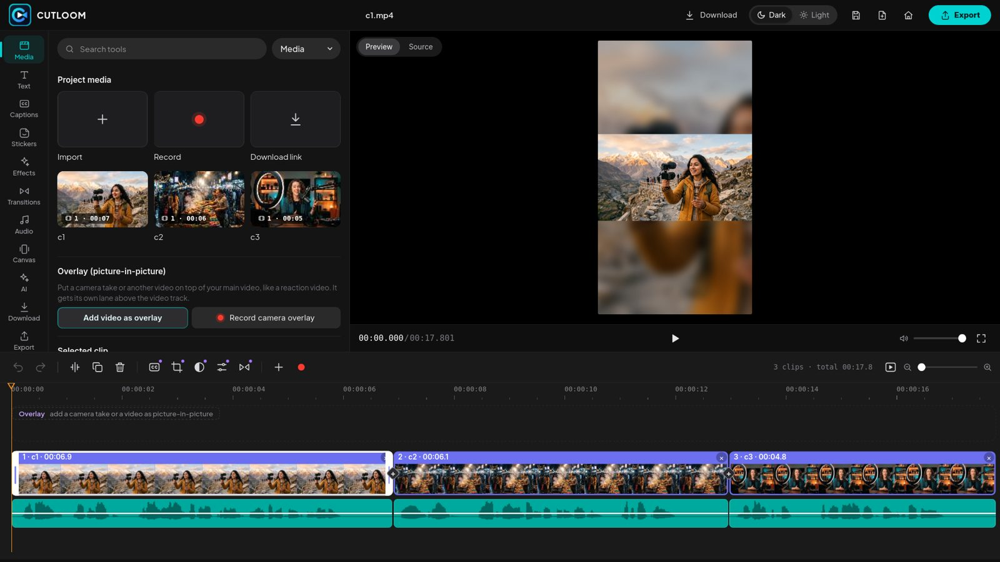

Cutloom cuts your long videos into Shorts, Reels and TikToks with auto captions in English, Urdu script and Roman Urdu. Everything runs on your own PC.
Download for Windows
Pick a style (Podcast, Talking head, Vlog, Tutorial and more) and Cutloom tightens pauses, adds punch-in zooms and picks the best moments.
Word-by-word captions in English, Urdu script and Roman Urdu, with TikTok, Karaoke, Neon and Highlight styles.
Put big hook text behind the speaker, the look that stops the scroll.
Record or generate a voice over, add sound effects and music beds that duck under speech.
Drop a QR code for your link, shop or WhatsApp straight onto the video.
Your videos never leave your computer. No watermark, no upload queue.